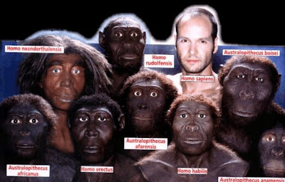
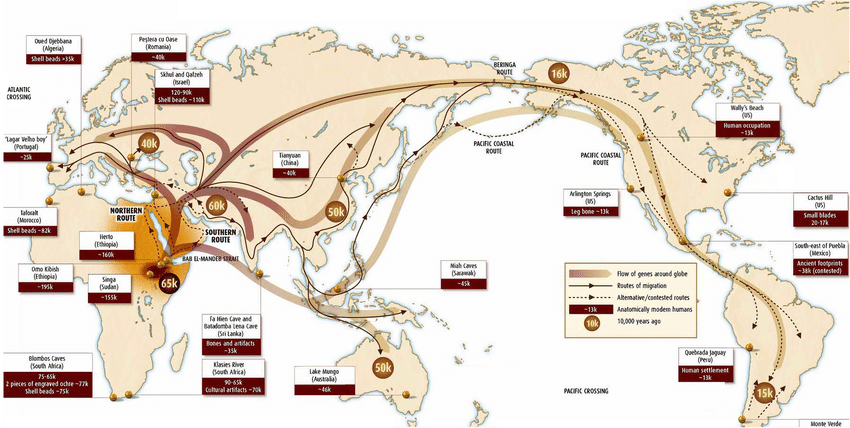
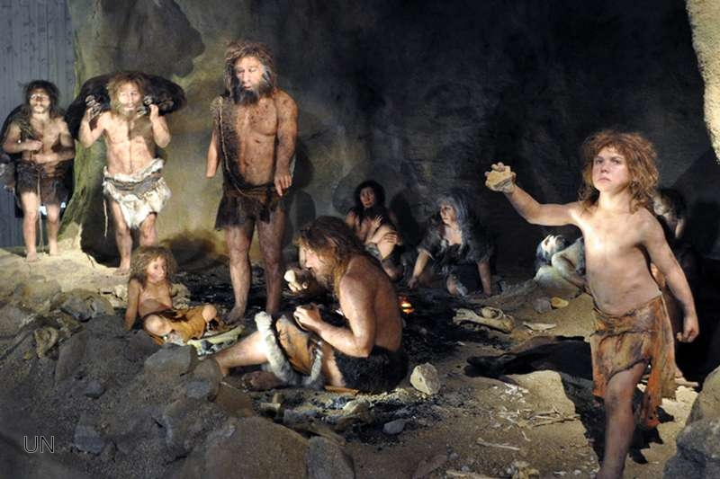
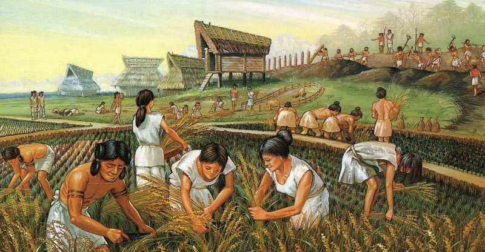
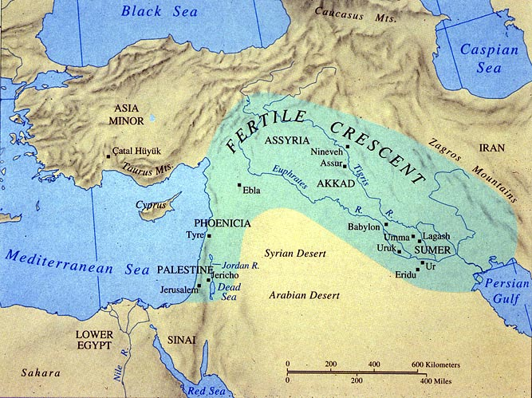
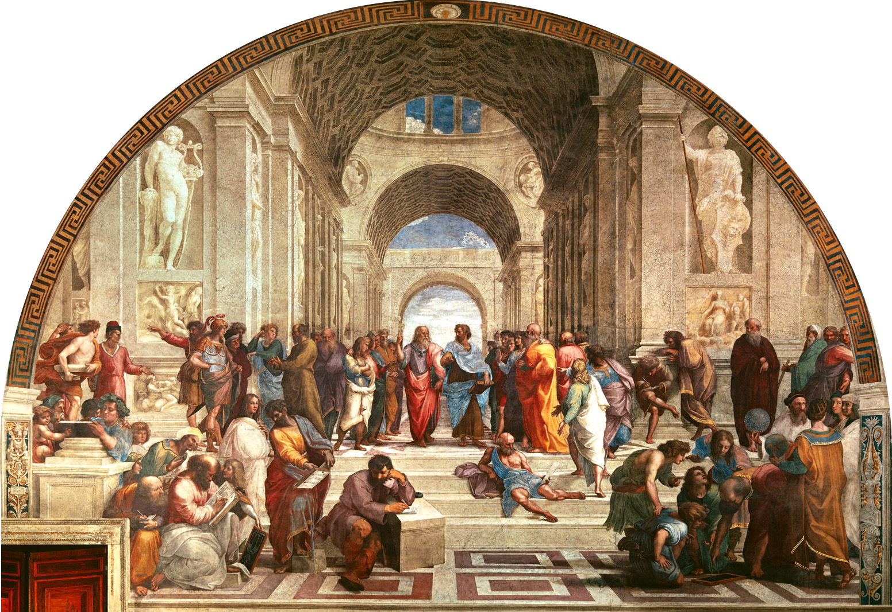
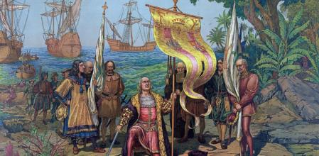
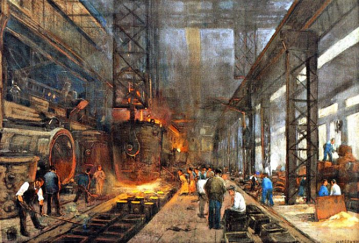

Tema 1. Informàtica i Societat
Introducció
En aquest tema tractarem d'entendre com ha afectat la revolució tecnològica a la societat en la que vivim. Primer exposarem uns sèrie de conceptes previs necessaris per entendre millor el tema.
Societat: Conjunt d'éssers humans que viuen en un grup de manera organitzada. Revolució: Canvi total o radical. Canvi profund en l'organització social, política o econòmica d'una societat
Per tant podem dir que s'enten com a revolució com a un canvi significatiu en l'organització d'una societat una part d'ella. Al llarg de la història de la humanitat s'han produit moltes recvolucions i la primera que ens vindrà al cap a tots és la revolució francesa del sXVIII o la revolució americana del sXVIII, que varen ser revolucions polítiques. Però nosaltres ens basarem en un altre tipus de revolucions: les revolucions socials.
Les revolucions socials més importants de la història de l'homo sapiens són les segünets:
- Revolució cognitiva
- Revolució agricola
- Revolució científica
- Revolució industrial
- Revolució tecnològica
Per entendre millor el que varen suposar aquestes revolucions per a les nostres societats avantpassades, necessitariem saber les segÜents coses:
- Què passa
- Quan passa
- On passa
- Quines conseqüències té
Revolució cognitiva
Ens trobem davant de la primera gran revolució social: la revolució cognitiva. És un concepte utilitzat per l'historiador Yuval Noah Harari per fer referència al moment en que començaren a pensar els homo sapiens
Quan passa
Aproximadament a l'any 70.000 aC i va significar que l'homo sapiens passés de ser un simi insignficant al cor de l'Africa a ser l'animal més poderós i important del planeta. Cal tenir en compte que en aquells moments a la Terra existien diversos tipus d'hominids però aquest canvi, mutació genètica, només es produeix a l'homo sapiens i no a l'homo neanderthalensis per exemple.

On passa
En aquell temps l'homo sapiens era un espècie d'hominid que vivia a l'Africa. D'entre tots els hominids que hi existien aleshores al planeta terra, només li afecta a l'homo sapiens, és a dir, nosltres.

Què passa
El que fa aquesta mutació genètica és que l'homo sapiens adquireix la capacitat d'inventar i pensar. No la capacitat de comunicar-se que ja la compartien amb altres espècies. Avisar i mentir ja sabien altres Amb la capacitat d'invenció augmenta la capacitat de l'ésser humà per explicar el perquè de les coses: per que plou? per que ix el sol? etc..
Quines conseqüències té
Abans de la revolució cognitiva l'homo sapiens era un animal social i nomada que podia agrupar-se en uns 30 a 50 individus. La confiança en els membres del grup era essencial per a la seua supervivència i l'ésser humà no tenia capacitat de "confiar" en grups més grans

Amb la mutació genètica que suposa la revolució cognitiva l'homo sàpiens adquireix una sèrie d'habilitats noves que el permeten:
- Un major nivell de col·laboració amb altres individus de la tribu
- Viure en grups mes grans amb major cohesió i una major cooperació
- Reforça el grup i el cohesiona (secret de l'exit de l'homo sapiens)
Teoria del xafardeig
Com hem dit abans la confiança en la resta de membres del grup era cabdal per la seua supervivència, i amb grups de més de 100 individus resulta complicat coneixer-los a tots. Doncs bé, la teoria diu que l'aparició dels xafardeigs va aconseguir el mateix efecte de cohesió en el grup.
Conseqüencies
- Augment del nombre d'individus al grup.
- Desaparició de la resta d'hominids que no podien competir amb l'homo sapiens.
- Primers mites. Mitologia inicialment animista.
- Les guerres organitzades.
Revolució agricola
També coneguda com revolució neolítica, apareix com a resposta al canvi climàtic del final de l'última glaciació i bàsicament consisteix en que l'homo sapiens apren, per serendípia segurament, a domesticar tant algunes plantes com alguns animals a banda del llop que ja feia anys que l'havien fet domèstic per caçar.
Per domesticar les plantes volem dir que l'home és capaç de cultivar i recollir diferents tipus de vegetals, més concretament els cereals: blat, dacsa, etc..
Quan passa
Aproximadament a l'any 10.000 aC i va significar que l'homo sapiens passes de ser una espècie nomada i societat de caçadors-recolectors a una societat sedentària

On passa
A la mitja lluna fèrtil a les valls dels rius Tigris i Eufrates.

Es pensa que per algun tipus de coincidència, l'home va descobrir que podia domesticar algun tipus de plantes com els cereals, tal vegada, algun homo sapiens va descobrir que en el lloc on va deixar caure algunes llavors de blat l'any anterior, havien aparegut plantes de blat començant d'aquesta manera l'agricultura.
Quines conseqüències té
La fita més important és que suposa el final del nomadisme dels grups d'homo sapiens. Aquestos que havien passat de ser grups familiars i reduits a grups de 50 a 100 persones gràcies a la revolució cognitiva, passen a establir-se en llocs concrets del planeta i com a conseqüencia més directa apareixen les grans ciutats.
Civilitzacions i grans religions
Amb les grans ciutats apareixen les primeres grans civilitzacions com la sumèria o la babilònia. La civilització sumèria és considerada la primera civilització de la història de l'homo sàpiens i es trobava enclava entre les desembocadures del Tigris i l'Eufrates.

Conseqüencies
- La fi del caçador recolector.
- Apareixen les matemàtiques i la escriptura.
- Alimentació més pobra i malnutrició crònica.
- Alteració d'ecosistemes per poder ser utilitzats (amb foc normalment).
- Domesticació alguns animals.
- Religió animista i inici de les grans religions.
- Ceràmica.
- Propietat privada.
- Esclavitud.
Revolució científica
Va ser el període en el qual les noves idees en física, astronomia, biologia, anatomia humana, química i altres ciències van portar a refusar les doctrines que prevalien des de l'antiga Grècia i que van continuar durant l'edat mitjana, i conduïren a la formació de la ciència moderna.
En aquest període de bondor econòmica es trenquen molts axiomes o dogmes de fe venien de l'edat mitjana i de les grans religions:
- La terra no és el centre de l'univers, és el sol.
- La terra no és plana si no redona
- etc..
Quan passa
Al segle XV durant l'epoca coneguda com el renaixement on s'estableix la base fonamanetal de la ciència moderna.

On passa
A l'Europa renaixentista. Del renaixement es sol destacar la vesant artística de l'epoca: Leonardo da Vinci, Raphael, Miquel Angel i Donatello (les tortugues ninja) però a banda també els inversors de l'epoca també depositaven els seus diners en projectes d'altres tipus com els projectes científics i d'innovació, no amb motius unicament altruistes si no també en busca de l'augment del seu benefici personal.
Que passa
Durant aquesta epoca de la història de la humanitat es fa especialment important la figura del mecenes. Un mecenes és una persona adinerada i d'alta posició social que decideix invertir la seua fortuna (una part d'ella) en projectes de diversa indole, des d'obres d'art, on els Medici a Florència n'eren el paradigma fins a expedicions pel planeta en busca de nous descobriments com el descobriment d'America per part de Cristobal Colom.

Quines conseqüències té
- Els diners
- Els prestecs, els interesos, l'ussura
- La globalització
- Naixement dels grans imperis
- El capitalisme
- Extinció dels grans mamífers
Revolució industrial
La Revolució Industrial és el procés d'industrialització amb el conjunt de canvis econòmics i socials que aquest comporta.
L'expressió aparegué a França entorn del 1820 per a designar el conjunt de canvis que es van produir a Anglaterra i Escòcia a la segona meitat del segle XVIII.
Quan passa
Com hem comentat al punt anterior, la revolució industrial apareix al segle XVIII.

On passa
Majorment es produeix al Regne Unit. És allà on apareix la màquina de vapor, fita que inicia la pròpia revolució industrial, ja que aquesta permetria per un costat el desenvolupament del ferrocarril i d'una altra banda la creació de les grans fàbriques.
Que passa
Els avenços tècnics —sobretot la màquina de vapor—, l'explosió demogràfica que s'inicià a partir del 1750 i l'èxode rural per la mà d'obra excedentària a l'agricultura van encapçalar canvis profunds de la societat.
Quines conseqüències té
- Noves tecnologies aplicades a la industria
- Les grans fàbriques
- Els drets laborals
- Les vagues
- El socialisme
- Els rellotges i la seua precisió
- Jornades laborals de 12 o 14 hores al dia.
- Explotació infantil
Revolució tecnològia
Ens trobem al segle XXI i des de meitat del segle XX que estem la més recent de totes les revolucions de l'història de la humanitat. La revolució tecnològia que s'enceta amb la invenció de les computadores per allà l'any 1950.
Quan passa
Encara estem en plena revolució tecnològica, és a dir, aqueta encara no ha acabat
On passa
Per tot arreu, una de les conseqüencies de la globalització i extensió de l'homo sapiens per tot el món ha fet que els grans canvis o grans revolucions ja no siguen efectes particulars d'alguna zona del planeta sino que afecten a tota la humanitat.
Que passa
Aparició dels ordinadors i les noves tecnologies entre d'altres.
Conseqüències
Encara no disposem de tota la informació necessària per saber exactament quines conseqüències pot tenir aquesta en el comportament i organització social de l'ésser humà però sí que es veritat que ja podem anar apuntant a algunes coses:
- Deslocalització
- Disminució de les distàncies. El món s'ha quedat menut.
- Comunicació.
- Accés a la informació. Societat de la informació.
Quin futur ens espera?